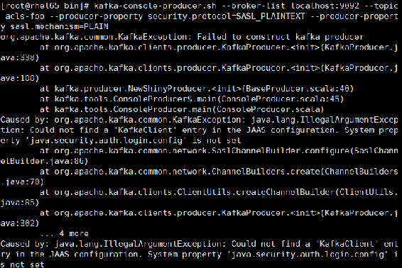
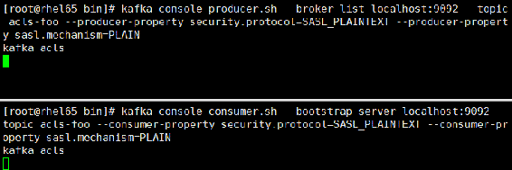
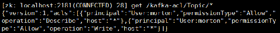
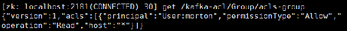

在0.9版本之后，Kafka增加了身份认证与权限控制两种安全机制。
身份认证是指客户端与服务端连接进行身份认证，包括客户端与Kafka代理之间的连接认证、代理之间的连接认证、代理与ZooKeeper之间的连接认证。目前支持SSL、SASL/Kerberos、SASL/PLAIN这3种认证机制。
权限控制是指对客户端的读写操作进行权限控制，包括对于消息或Kafka集群操作权限控制。权限控制是可插拔的，并且支持与外部的授权服务进行集成，Kafka自带了简单的授权实现类SimpleAclAuthorizer，可以在server.properties文件中通过配置项authorizer.class.name指定，如设置authorizer.class.name=kafka.security.auth.SimpleAclAuthorizer。Kafka权限类型如表5-11所示。
表5-11 Kafka权限控制权限类型说明
|
权限类型 |
权限说明 |
|---|---|
|
READ |
读操作权限，如消费者消费主题的权限、消费组管理时相关读取相关元信息权限等 |
|
WRITE |
写操作权限，如生产者向主题写消息的权限 |
|
DELETE |
删除主题操作的权限 |
|
CREATE |
创建主题操作的权限 |
|
ALTER |
修改主题及配置操作的权限 |
|
DESCRIBE |
获取主题元数据信息的权限 |
|
ClusterAction |
集群元数据操作权限，如更新集群元数据操作、关闭控制器、停止副本等 |
|
ALL |
所有权限 |
Kafka将权限控制列表ACL存储在ZooKeeper中，当添加权限控制之后，会在ZooKeeper中创建两个节点：即存储ACL信息的kafka-acl节点和存储ACL变更信息的kafka-acl-changes节点。
关于身份认证和权限控制的实现原理以及相应的认证机制原理，本书不进行讲解，读者可自行查阅相关资料进行学习。本节通过Kafka自带脚本kafka-acls.sh介绍基于SASL/PLAIN认证机制配置身份认证操作的步骤以及相应的权限控制操作。SASL/PLAIN是一套简单的通过用户名和密码进行身份认证的机制，主要与TLS加密一起使用来实现安全身份认证，Kafka对SASL/PLAIN支持一种默认实现。
下面详细介绍基于SASL/PLAIN机制进行身份认证及权限控制操作的基本步骤。
利用SASL/PLAIN进行身份认证的基本步骤如下。
（1）修改server.properties文件，开启SASL认证配置。在Kafka集群每个节点的server.properties文件中增加开启SASL认证机制相关配置，如代码清单5-12所示。为了讲解方便，本例在单节点的Kafka上进行配置。
代码清单5-12 KafkaServer开启SASL认证的相关配置
# 配置一个SASL端口
listeners=SASL_PLAINTEXT://0.0.0.0:9092
# 设置代理之间通信协议
security.inter.broker.protocol=SASL_PLAINTEXT
# 启用SASL机制
sasl.enabled.mechanisms=PLAIN
# 配置SASL机制
sasl.mechanism.inter.broker.protocol=PLAIN（2）创建服务端JAAS文件，配置PLAIN。创建一个服务端Java验证与授权JAAS文件，该文件名为“kafka_server_jaas.conf”，在该文件中指定认证机制，并配置连接代理的用户名和密码。该文件内容如代码清单5-13所示。
代码清单5-13 服务端JAAS文件的具体配置内容
KafkaServer {
org.apache.kafka.common.security.plain.PlainLoginModule required
username="kafka"
password="kafkapswd"
user_kafka="kafkapswd"
user_morton="mortonpswd";
};Kafka定义了关键字“KafkaServer”字段用于指定服务端登录配置。该配置通过org.apache. kafka.common.security.plain.PlainLoginModule指定采用PLAIN机制，定义了两个用户，用户通过username和password指定该代理与集群其他代理初始化连接的用户名和密码，通过“user_”为前缀后接用户名方式创建连接代理的用户名和密码，例如，user_morton= "mortonpswd"是指用户名为morton，密码为mortonpswd。
（3）创建和配置客户端JAAS文件。创建一个客户端JAAS文件，在该文件中指定客户端消费者和生产者连接KafkaServer的认证机制。该文件名为“kafka_client_jaas.conf”，具体配置如代码清单5-14所示。
代码清单5-14 客户端JAAS配置文件的具体内容
KafkaClient {
org.apache.kafka.common.security.plain.PlainLoginModule required
username="morton"
password="mortonpswd";
};Kafka通过关键字“KafkaClient”字段用于指定客户端连接Kafka服务端登录配置，通过username和password字段配置客户端连接服务端的用户信息，这里指定用户为“morton”。
（4）将JAAS配置文件加入相应启动脚本中。
if [ "x$KAFKA_OPTS" ]; then
export KAFKA_OPTS="-DJava.security.auth.login.config=/usr/local/software/
kafka/ kafka_2.11-0.10.1.1/config/kafka_server_jaas.conf"
fi if [ "x$KAFKA_OPTS" ]; then
export KAFKA_OPTS="-DJava.security.auth.login.config=/usr/local/software/
kafka/ kafka_2.11-0.10.1.1/config/kafka_client_jaas.conf"
fi至此，认证相关配置基本完成。当然，还可以配置代理连接ZooKeeper的认证，这里不再介绍。
下面分别启动客户端进行验证。为了对比验证，首先注释掉kafka-console-producer.sh脚本文件中添加的JAAS路径配置，然后重启Kafka代理，创建一个主题并启动生产者和消费者客户端，相关命令如下：
kafka-server-start.sh -daemon ../config/server.properties # 重启Kafka代理
kafka-topics.sh --zookeeper localhost:2181 --create --topic acls-foo --partitions
1 --replication-factor 1 # 创建用于测试acls的主题
kafka-console-producer.sh --broker-list localhost:9092 --topic acls-foo
--producer-property security.protocol=SASL_PLAINTEXT --producer-property
sasl.mechanism=PLAIN # 启动生产者，该生产者启动时没有引入客户端JAAS配置文件
kafka-console-consumer.sh --bootstrap-server localhost:9092 --topic acls-foo
--consumer-property security.protocol=SASL_PLAINTEXT --consumer-property
sasl.mechanism=PLAIN # 启动消费者，该消费者启动脚本引入了客户端JAAS配置文件生产者启动后，在控制台输入一条消息，此时发现消费者并没有收到消息，同时在启动生产者的控制台打印如图5-27所示错误信息。

图5-27 没有引入JAAS配置文件启动生产者时的错误提示信息
若执行以下命令启动生产者：
kafka-console-producer.sh --broker-list localhost:9092 --topic acls-foo在控制台输入一条消息后，控制台输出信息如下：
WARN Bootstrap broker localhost:9092 disconnected (org.apache.kafka.
clients.NetworkClient)可见，生产者并没有连接上代理。现在，在生产者脚本中引入对客户端JAAS路径的配置，重新启动生产者，然后再尝试发送一条消息，执行结果如图5-28所示。

图5-28 Kafka身份认证配置测试结果
由图5-25可知，客户端已正常连接上Kafka代理，并能够正常通信。
kafka-acls.sh脚本支持查询（list）、添加（add）、移除（remove）这3类权限控制的操作。要启用Kafka ACL权限控制，首先需要在server.properties文件中增加权限控制实现类的设置，如指定Kafka实现的SimpleAclAuthorizer类：
authorizer.class.name = kafka.security.auth.SimpleAclAuthorizer设置完成后，重启Kafka。此时启动消费者客户端时，会抛出以下错误信息：
ERROR Unknown error when running consumer: (kafka.tools.ConsoleConsumer$)
org.apache.kafka.common.errors.GroupAuthorizationException: Not authorized to
access group: console-consumer-1259该错误信息提示未给该用户授予访问消费组的权限，也就是没有授予读的权限。此时启动生产者也会有相应的错误信息。之所以客户端启动时会报相关的权限问题，是因为在开启权限控制后，默认条件下除超级用户之外，所有用户均还未授予任何权限，如果希望改变这种限制可以在server.properties文件中增加以下配置：
allow.everyone.if.no.acl.found=true同时在server.properties文件中配置超级用户，格式如下：
super.users=User:user1;User:user2由于客户启动时都需要连接到Kafka，因此需要加入Java.security.auth.login.config 环境变量设置，否则即使进行了授权，客户端依然会连接不上Kafka。客户端相应执行脚本都会调用kafka-run-class.sh脚本，因此在该文件中引入Java.security.auth.login.config环境变更设置信息，即引入登录认证服务JAAS文件配置路径。修改该文件的“Launch mode”相关设置（在该文件的最后几行处），定义一个KAFKA_SASL_OPTS变量，引入服务端JAAS配置文件，同时加入到环境变量中，修改后的配置如代码清单5-15所示。
代码清单5-15 客户端环境变量中引入服务端JAAS的配置
KAFKA_SASL_OPTS='-DJava.security.auth.login.config=/usr/local/software/kafka/kafk
a_2.11-0.10.1.1/config/kafka_server_jaas.conf'
if [ "x$DAEMON_MODE" = "xtrue" ]; then
nohup $Java $KAFKA_HEAP_OPTS $KAFKA_JVM_PERFORMANCE_OPTS $KAFKA_GC_LOG_OPTS
$KAFKA_JMX_OPTS $KAFKA_SASL_OPTS $KAFKA_LOG4J_OPTS -cp $CLASSPATH $KAFKA_OPTS "$@" >
"$CONSOLE_OUTPUT_FILE" 2>&1 < /dev/null &
else
exec $Java $KAFKA_HEAP_OPTS $KAFKA_JVM_PERFORMANCE_OPTS $KAFKA_GC_LOG_OPTS
$KAFKA_ JMX_OPTS $KAFKA_SASL_OPTS $KAFKA_LOG4J_OPTS -cp $CLASSPATH $KAFKA_OPTS "$@"
fi若是通过API方式调用，则在客户端增加以下代码引入认证配置：
System.setProperty("Java.security.auth.login.config", "/usr/local/software/kafka/
kafka_2.11-0.10.1.1/config/kafka_server_jaas.conf'");下面详细介绍这3类操作的具体用法。
（1）查询权限列表。通过kafka-acls.sh脚本可以查询某个主题（--topic）、某个消费组（--group）、集群（--cluster）当前的权限列表。
例如，执行以下命令查看当前集群的权限列表：
kafka-acls.sh --authorizer-properties zookeeper.connect=localhost:2181 --list –cluster输出结果：
Current ACLs for resource `Cluster:kafka-cluster`:由于当前还没有设置任何权限，因此查询结果为空。
（2）为生产者授权。首先在未授权情况下，执行以下启动生产者命令：
kafka-console-producer.sh --broker-list localhost:9092 --topic acls-foo
--producer-property security.protocol=SASL_PLAINTEXT --producer-property
sasl.mechanism=PLAIN在未授权情况下启动生产者，在控制台输出以下失败信息：
WARN Error while fetching metadata with correlation id 0 :
{acls-foo=UNKNOWN_TOPIC_OR_PARTITION} (org.apache.kafka.clients.NetworkClient)这是由于当前客户端并没有查询元数据信息的权限，下面为当前客户端授予生产者相应的权限。
通过add指令增加一条权限设置，增加权限时需要通过参数allow-principal指定给某个用户授权或者通过参数deny-principal指定某用户不具有的权限，该用户即为身份认证时创建的客户端用户。因为权限控制就是控制客户端相应的操作权限，因此必须对应到具体的用户。当然，也可以通过User:*指定权限控制的对象为所有用户。执行以下命令，为用户morton授予作为生产者所具有的权限。
kafka-acls.sh --add --authorizer-properties zookeeper.connect=localhost:2181
--allow-principal User:morton --producer --topic=*该命令通过producer参数指定为该用户生产者角色授权，相当于通过--operation参数赋予Write和Describe权限，该命令指定该用户对所有主题具有写和查询权限，包括查询元数据信息的权限。此时，执行以下命令查询当前的权限信息：
kafka-acls.sh --authorizer-properties zookeeper.connect=localhost:2181 –list输出权限信息：
Current ACLs for resource `Topic:*`:
User:morton has Allow permission for operations: Describe from hosts: *
User:morton has Allow permission for operations: Write from hosts: *
Current ACLs for resource `Cluster:kafka-cluster`:
User:morton has Allow permission for operations: Create from hosts: *由权限信息可知，该用户对所有主题具有查询及写的权限，对集群具有写的权限。权限信息中hosts：*表示允许所有的机器可以访问，即该用户作为生产者时对其机器IP不进行权限控制，可以通过参数allow-host或者deny-host来设置允许或禁止生产者访问IP。
同时，登录ZooKeeper客户端，在/kafka-acls路径下会创建两个节点名分别为“Topic”和“Cluster”的节点，在Topic节点再创建一个以“”为名的节点，用于记录当前设置的权限信息，之所以节点名为“”，是因为在授权时通过“*”指定当前客户端作为生产者时对所有主题具有操作权限。在ZooKeeper的kafka-acls路径下的Topic权限列表信息如图5-29所示。

图5-29 生产者权限列表信息
授权后再次启动生产者，可以正常发送信息。
（3）为消费者授权。在未对消费者授权时，执行以下命令启动消费者：
kafka-console-consumer.sh --bootstrap-server localhost:9092 --topic acls-foo
--consumer-property security.protocol=SASL_PLAINTEXT --consumer-property
sasl.mechanism=PLAIN消费者启动失败，同时在控制台输出如下错误信息：
ERROR Unknown error when running consumer: (kafka.tools.ConsoleConsumer$)
org.apache.kafka.common.errors.GroupAuthorizationException: Not authorized to
access group: console-consumer-5158由日志信息可知，当前客户端不具有访问消费组的权限。现在，执行以下命令为客户端授予消费者的权限，这里指定该客户端消费者只能消费acls-foo主题的消息。
kafka-acls.sh --add --authorizer-properties zookeeper.connect=localhost:2181
--allow-principal User:morton --consumer --topic acls-foo --group acls-group由于消费者属于某个消费组，因此授权时需要通过--group参数指定该消费者所属的消费组。这里指定属于acls-group消费组的消费者才具有消费该主题的权限，执行以下启动生产者的命令，通过group.id指定消费组，当然也可将消费者相关的配置添加到一个属性文件，在启动消费者时通过consumer.conf参数加载该配置文件。
kafka-console-consumer.sh --bootstrap-server localhost:9092 --topic acls-foo
--consumer-property security.protocol=SASL_PLAINTEXT --consumer-property
sasl.mechanism=PLAIN --consumer-property group.id=acls-group该消费者启动后，正常接收到生产者发送到“acls-foo”主题的消息。与生产者权限设置一样，也可以通过allow-host或者deny-host参数设置允许或禁止消费者的访问IP。在ZooKeeper的/kafka-acls路径下会创建一个Group节点，通过ZooKeeper客户端查看该节点及其子节点信息如图5-30所示。

图5-30 消费者权限控制列表信息
（4）删除权限。通过remove参数删除相应的权限信息，可以删除某用户对主题（--topic）操作的权限、对集群（--cluster）操作的权限和对消费组（--group）操作的权限。
例如，删除所有用户对acls-foo主题的所有权限，当然在多个用户的情况下，也可以指定某个用户，命令如下。可以通过--topic=*指定主题，也可以通过--operation指定删除具体的权限。在删除权限时会让用户确认是否进行删除操作，可以通过force参数表示强制删除，这样在控制台执行删除权限命令时就不会出现让客户端确认删除操作的提示信息。
kafka-acls.sh --authorizer-properties zookeeper.connect=localhost:2181 --remove
--topic acls-foo –force删除所有用户对集群的操作权限，命令如下：
kafka-acls.sh --authorizer-properties zookeeper.connect=localhost:2181 --remove
–cluster删除“acls-group”消费组的消费者相应权限，命令如下：
kafka-acls.sh --authorizer-properties zookeeper.connect=localhost:2181 --remove
--group acls-group至此，Kafka身份认证及权限控制基本操作介绍完毕。对于其他认证机制的配置及组合权限的设置，这里不再介绍。